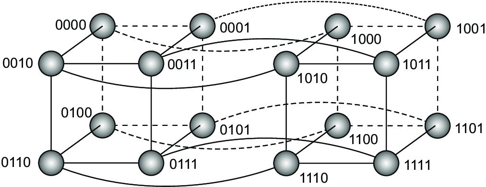

- more loose organisation
- objects - represent components
- procedure calls - represent connectors
- procedure calls take place over the network
Distributed systems
Architectures
Organization of distributed systems
The importance of organization of distributed systems:
Two types of architectures (according to van Steen, Tannenbaum)- Software achitecture
- shows how software components are to be organized and how they should interact
- System architecture
- shows how software components are finally instantiated on real machines
What is an architectural style
- types of components we have in the system
- manner in which are those components connected to each other
- the way in which data is exchanged among components
- how components are jointly configured into a system
- component
- modular units which have well defined interfaces
- on many occassions it should be possible to replace them while system operates
- connector
- mechanisms that mediate communication, coordination and cooperation among components
- examples: facilities for remote procedure calls, message passing, streaming data
Two types of entities
Architectural styles
Layered architectures
Layered architectures
Layered architectures
Transmission control protocol(TCP)
Logical layering of applications
- application interface level
- which handles interactions with users or external applications
- processing level
- middle system which contains core functionality of the application
- data level
- operates on databases or file system
Simplified organization of an Internet search Engine
Example of three tier organization
Object-based architectures
Object based architectures - cont.
Object-based and service-oriented architectures
- service-oriented architectures (SOA)
- distributed application - composition of many services
- services should to be organized in logical units
- all services do not have to be in the same organization
-
Example: Web shop selling goods
- Ordering includes selecting items, registering, checking delivery channal, payment
- payment can be handled by separate service run by different organization
- service composition
Resource-based architecture
- Integrating many various components in service-oriented architecture can be cumbersome
- This led to a new alternative approach
- view of distributed system as a collection of resources
- Representational State Transfer (REST)
- REST characteristics:
- indentification through a single naming scheme
- all services have the same interface with most four operations
- fully self-described messages
- component forgets everything about the caller after executing operation at a service (stateless execution)
RESTful architecure - operations
| Operation | Description |
|---|---|
| PUT | Modify a resource by transferring a new state |
| GET | Retrieve the state of the resource |
| DELETE | Delete a resource |
| POST | Create a new resource |
SOA vs. REST
questions whether RESTful is better then SOA
- SOA client and server are simply more coupled
- REST client is more like a browser.
- SOA client has to know exactly what service it needs
- REST client has to know simply only entry point and media type
- SOA architecture is more suitable in cases where the state has to be preserved
- REST solutions are more complex when state has to be preserved
Event-based architectures (Publish-subscribe architectures)
| Temporally coupled | Temporally decoupled | |
|---|---|---|
| Referentially coupled | Direct | Mailbox |
| Referentially decoupled | Event-based | Shared data space |
Middleware organization
- overall organiztion of the actual distributed systems
- two most used design patterns for middleware organization
- wrappers
- wrappers (adapters) are components which offer interface suitable for client applications
- solve the problem of incompatible interfaces
- interceptors
- break usual flow of control in orderd to execute code
Wrapper
- always played an important role in extending system interfaces
- basically if we system A having some data wants to provide that data to B it needs a wrapper
- in this system for cooperation we would need $N \times (N-1) = O(N) $ wrappers which is not good solution
- middleware solution with a message broker
- brocker has relevant information about applications
- combines and transforms responses and gives results to the
initial application
Interceptor
- an object A can call a method that belongs to an object B (which resides on a different machine than A)
- limited interception abilities improves management of the software
- this remote-object invocation is carried out in three steps:
- object A is offered a local interface. A calls a method offered in that interface
- the call is transformed through a generic object-invocation interface offered by the middleware
- generic object-invocaton is transformed into message and sent throug the network
Middleware organization
- overall organiztion of the actual distributed systems
- two most used design patterns for middleware organization
- wrappers
- wrappers (adapters) are components which offer interface suitable for client applications
- solve the problem of incompatible interfaces
- interceptors
- break usual flow of control in orderd to execute code
System architecture
- an instance of software architecture which decides on:
- software components
- interaction of components
- placements of components
- considers where software components are placed
[Bass at all. 2003] - centralized organization
- decentralized organization
- hybrid organization
-
Types:
Centralized organization
- client-server organization can be used to explain many constructions in distributed systems
- Simple client-server architecture
- Server
- Implements specific service (for instance database service)
- Client
- requests the service from the server
- sends request and then wait for the server's reply
-
processes divided into two groups
Simple client server architecture
- using connectionless protocols
- in secure local-area network
- efficient as long as messages are not corrupted
- request-response works fine
- idempotent operations - which can be repeated multiple times with no harm
- this is ok if we don't need to do some transactions
- using connection-oriented protocols
- more reliable
- suitable for WAN networks - more reliable in an unreliable environment
- example: TCP/IP protocol
- bigger overhead (cost) then with connectionless protocols
- creating and closing connections
Different two-tiered organizations
- only terminal dependent part on the client machine
- entire user interface on the client side
- front end has a part of the applicaton - js in html forms
- complete application on the client side - banking applications
- part of the data on the client's local disk - browsing the Web
Different two-tiered organizations -cont
General division on fat and thin clients
- fat clients
- examples 4,5 on the last page
- thin clients
- examples 1,2,3 on the last page
Multitiered architectures
- sometimes server has to act as a client
- example of physically three-tiered architecture
- single server is being replaced by multiple servers
- examples: transaction processing and Web sites
Decentralized organizations ( peer-to-peer systems )
- clients or servers are split into equivalent parts
- each part operates on it's share of data
- processes that constitute pear-to-pear system tend to be equal
- servant - process that acts as a client and a server at the same time
- overlay network
- network in which the nodes are formed from processes and communication channels
- nodes communicate by sending messages through the available communication channels (often TCP connections)
Types of peer-to-peer systems
2 general types identified
- Structured peer-to-peer systems
- overlay adheres to a specific, deterministic topology (ring, binary tree, grid..)
- topology used to look up data
- Unstructured peer-to-peer systems
- each node maintains ad hoc list of neighbors
Structured pear-to-pear systems
- specific topology
- using sematic-free index
- each data used by the system is uniquely associated with a key $key(data\ item) = hash(data\ item's\ value) $
- peer-to-peer system stores pairs (key, value)
- each node is responisble for a specific subset of keys
- each node is with one of these keys
- system represents distributed hash table
- system has to provide efficent implementations of lookup function $existing\ node= lookup(key) $
Structured peer-to-peer systems - hypercube
- 14 is represented with 1110 as a binary value
- example - looking for 14 from the node 0111
- 2 options 0110 or 1111 and both give in the next iteration the solution 1110
Structured peer-to-peer systems - chord

- key k is mapped to the node with the smallest identrifier $id \ge k$
- key 128 or 160 bits long
- for instance node 9 is asked to look up the node responsible for key 3
- node 9 has 4 shortcuts 11, 14, 18, and 28
- node 28 forward request to node 1
Unstructured peer-to-peer systems
- each node maintains ad hoc list of neighbors
- overlay network resembles to a random graph
- lists of neighbors are changed frequently
- different techniques for the search of data
- Flooding - passing request to all neighbors
- Random walks - randomly choosing neighbors
- in both cases TTL (time to live) method is used to constraint number of hops
Hybrid architectures
- client-server solutions combined with decentralized solutions
- Edge server systems
- Colaborative distributed systems
Edge server systems
- deployed on the Internet where servers are placed "at the edge" of the network
- Internet Service Providers (ISP) - boundary between enterprise networks and actual Internet
- used for optimization of content and application distribution
Edge server systems
can be organized form the origing server and other servers replicating Web content
Colaborative distributed systems
- starting communiation is an issue
- solution:
- during starting phase using traditional client-server scheme
- after starting phase fully decentralised schame used for colaboration
- example: BitTorrent file sharing system
BitTorrent
logic - end user downloads chunks of a file until he has the complete file
Question: how to ensure collaboration?
- free riding - majority of users only downloading but contributing nothing
BitTorrent - organization
- torrent files - located on the well their Web sites
- torrent files contain links to trackers
- tracker has an account of active nodes
- active nodes - nodes which are downloading the file, as well
-
simple rule for colaboration
-
P can decide to decrease the rate at which it sends data to Q
if Q is downloading more than it is uploading
BitTorrent - organization cont.
- generally only one tracker per file
- tracking functionality is minimalized to one-time provisioning of peers.
- trackers provides only part of all downloading nodes
- swarm - complete set of downloading nodes
- neighbor set - subset of swarm with whom node collaborates is called
-
neighbor set periodically updated by contacting the tracker
- when new peer joins the swarm
BitTorrent - organization cont.
- seeder - node which has all chunks of file and continues to participate in its swarm
- leechers - all others in the swarm
- pieces - equaly sized chunks, the file is divided in - typically 256 Kbyte
- block - unit of data transfer between peers - typically 16 Kbyte
- potential set - neighbor B belongs to potential set of node A if it has nodes that A does not have, and vice versa - important for trading
BitTorrent - downloading phases
-
Bootstrap phase
- pieces get through mechanisam of optimistic unchoking
-
Trading phase
- there are always peers with whom node can trade blocks
-
Last download phase
- potential set has dropped to zero
- node dependent on newly arriving peers
BitTorrent - downloading phases
developement of the potential set size relative to the neighborhood size